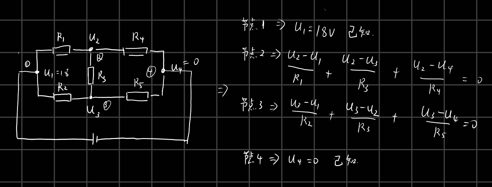

计算电压
题目背景
相信不少人轻松灭掉 1，2 两题（蒟蒻无视此句）
，我相信，大家对物理也是很有兴趣的（众人：我们对揍人也是很有兴趣的）
，那么，再奉上 100 分给 Physicaler 们。
题目描述
现给定一个电阻网络，已知其中每条边上的电阻，和若干个点和负极之间的电压（电源电压不变）
，现在求任意两点之间的电压。
输入格式
第一行四个正整数 \(n,m,k,q\)，表示有
\(n\)
个节点（可能是几个点用导线相连接，与一个点等价，编号为 \(1\) 至 \(n\)，\(0\)
号节点为电源负极），\(m\)
个定值电阻（每个定值电阻连接两个点），电源正极有 \(k\) 个接口，有 \(q\) 个询问。
接下来 \(k\)
行，每行两个正整数，表示这个正极的编号与该接线柱与电源负极之间的电压
\(u_i\)。
再接下来 \(m\) 行，每行三个正整数
\(v_i,w_i,r_i\)，表示节点 \(v_i\) 与 \(w_i\) 之间有一条阻值为 \(r_i\) 的电阻丝。
再接下来 \(q\) 行，每行两个正整数
\(a_i,b_i\)，表示要求 \(a_i\) 与 \(b_i\) 之间的电压。
输出格式
一共 \(q\) 行，每行一个实数表示
\(a_i\) 与 \(b_i\) 之间的电压（保留两位小数）。若 \(a_i\) 点电压小于 \(b_i\) 点电压，输出负值。
样例 #1
样例输入 #1
1
2
3
4
5
6
7
8
9
10
| 3 5 1 3
1 18
1 2 6
1 3 2
2 3 6
3 0 6
2 0 2
1 0
2 3
1 2
|
样例输出 #1
提示
【数据范围】
对于 \(10\%\) 的数据，\(1\le q\le 10\)；
对于 \(20\%\) 的数据，\(1\le n\le
10\)，且保证电路为串联、并联或混联；
对于 \(40\%\) 的数据，\(1\le n\le 40\)，\(k\le 5\)；
对于 \(100\%\) 的数据，\(1\le k\le n\le 200\)，\(1\le m\le 2\times 10^5\)，\(1\le r_i,u_i\le 10^4\)，\(1\le q\le 10^6\)。
【时空限制】
时间限制：1.00s，空间限制：125.00MB。
【样例解释】
如图所示。
 样例解释
样例解释
题解
主要思路是对于一个节点，流入的电流和流出的电流量是一样的，我们将流入某一节点的电流量表示为正数，流出某一节点的电流量视为负数，那么将其加起来和就是0，于是对于每一个节点列这样一个方程组就能解出来所有节点的电压。

方程组
1
2
3
4
5
6
7
8
9
10
11
12
13
14
15
16
17
18
19
20
21
22
23
24
25
26
27
28
29
30
31
32
33
34
35
36
37
38
39
40
41
42
43
44
45
46
47
48
49
50
51
52
53
54
55
56
57
58
59
60
61
62
63
64
65
66
67
68
69
70
71
72
73
74
75
76
77
78
79
80
81
82
83
84
85
86
87
88
89
90
91
92
93
94
95
96
97
98
99
|
#include<bits/stdc++.h>
using namespace std;
#define ll long long
#define DEBUG1
const int mod1 = 1e9 + 7;
const int mod2 = 998244353;
const int maxx = 202;
double G[maxx][maxx];
int vis[maxx];
void print(int n)
{
for(int i = 0;i <= n;i++){
for(int j = 0;j <= n + 1;j++){
printf("%0.2lf ",G[i][j]);
}
cout<<endl;
}
}
void solve(int n){
for(int i = 0;i <= n;i++){
double p_1 = G[i][i];
for(int j = n + 1;j >= 0;j--){
G[i][j] /= p_1;
}
for(int j = i + 1;j <= n;j++){
double p = G[j][i] / G[i][i];
#ifdef DEBUG0
cout<<endl;
print(n);
cout<<endl;
#endif
for(int k = n + 1;k >= 0;k--){
G[j][k] -= p * G[i][k];
}
#ifdef DEBUG0
print(n);
cout<<endl;
#endif
}
}
for(int i = n;i >= 0;i--){
for(int j = i - 1;j >= 0;j--){
double p = (G[j][i] / G[i][i]);
for(int k = 0;k <= n + 1;k++){
G[j][k] -= p * G[i][k];
}
}
}
}
int main()
{
int n,m,k,q;
cin>>n>>m>>k>>q;
G[0][0] = 1;
vis[0] = 1;
for(int i = 0;i < k;i++){
int p1,u;
cin>>p1>>u;
vis[p1] = 1;
G[p1][p1] = 1;
G[p1][n + 1] = u;
}
for(int i = 0;i < m;i++){
int p1,p2,R;
cin>>p1>>p2>>R;
if(vis[p1] == 0){
G[p1][p2] += (double)1 / R;
G[p1][p1] -= (double)1 / R;
}
if(vis[p2] == 0){
G[p2][p1] += (double)1 / R;
G[p2][p2] -= (double)1 / R;
}
}
solve(n);
for(int i =0 ;i < q;i++){
int p1,p2;
cin>>p1>>p2;
printf("%.2lf\n",(G[p1][n + 1] - G[p2][n + 1]));
}
}
|